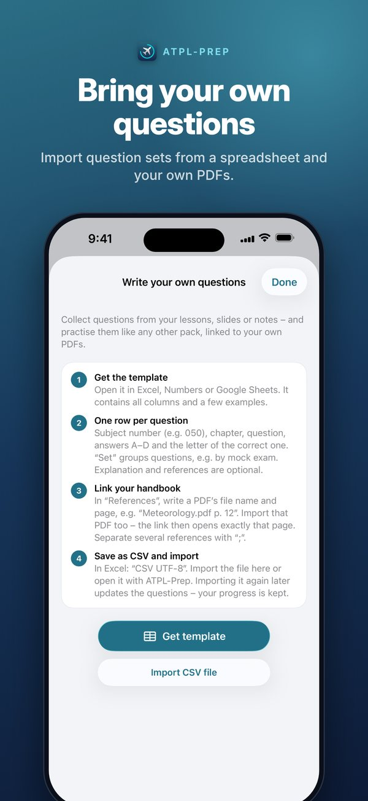
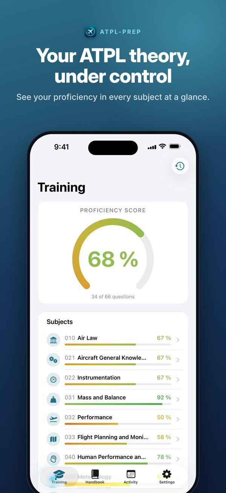
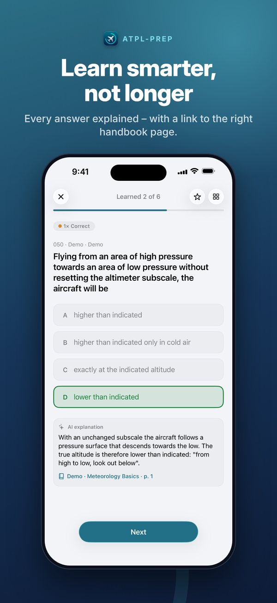
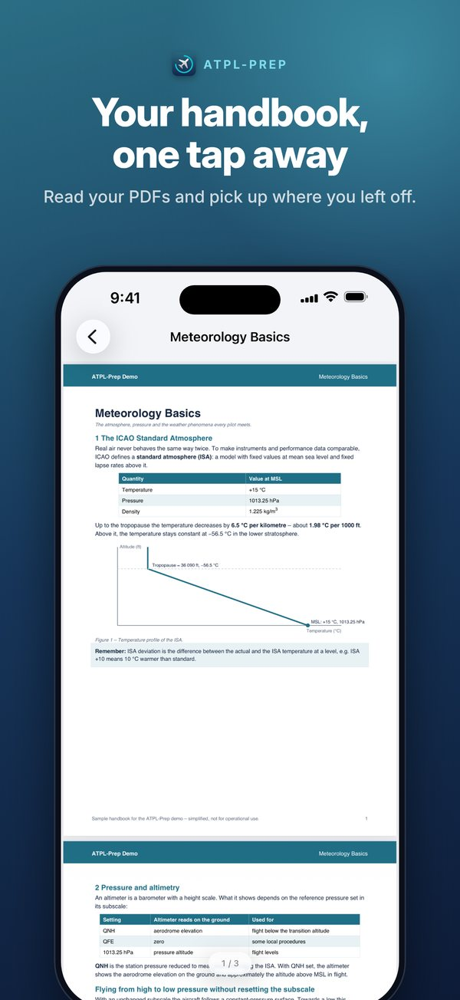
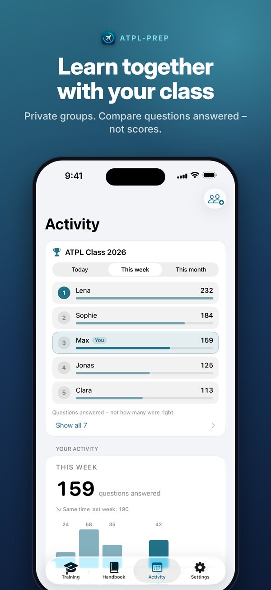

How it works
1 Import
Bring in your question catalogue as a CSV file and, if you like, your PDF handbooks.
2 Practise
Learn by subject or run an exam session. Every question can open the matching handbook page.
3 Keep track
See where you stand in each subject and what still needs work.
Features
Your own questions
Import the question catalogues you work with as a CSV file. A template and a step-by-step guide are built into the app.
Your own handbooks
Add your PDF handbooks and link each question to the right page.
Practice by subject
Your questions sorted into the 13 ATPL subjects, with progress that remembers what you still need to work on.
Exam sessions
Test sessions across a subject or a whole question pack, with a review afterwards.
Study groups
Compare daily activity with your class via an invitation link. Only your name and question counts are shared.
iPhone, iPad and Mac
Your progress syncs through your own iCloud. No account, no ads, no tracking.
ATPL-Prep is an independent study aid and is not affiliated with EASA, the LBA or any examination provider. The app does not come with its own question bank: it is built for the questions you import. A small demo with sample questions for every subject is included so you can try it first.